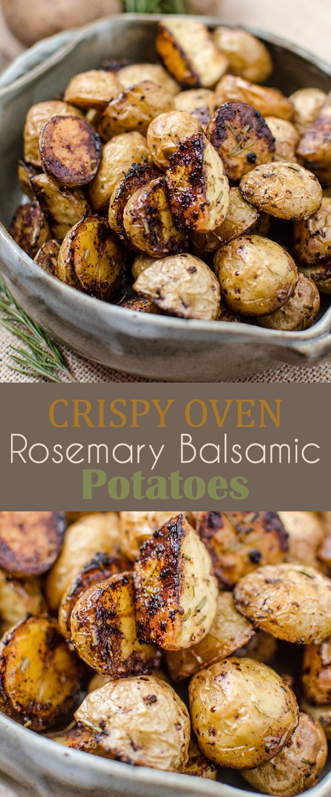
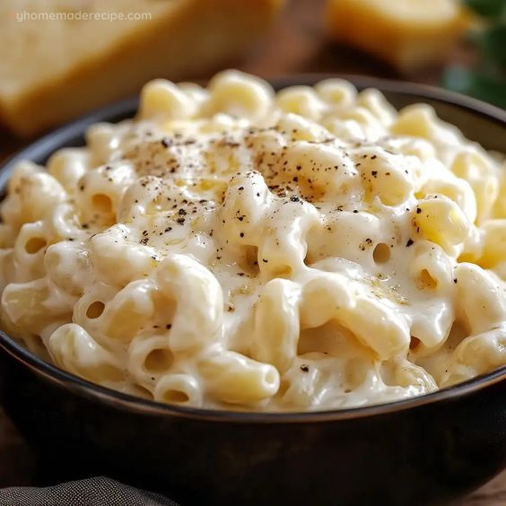

Balsamic Mini Potatoes

Description
These mini balsamic potatoes are mushy, but a bit tangy. They melt within your mouth in such a nice way. They have taste so warm on the inside, but coated with spice, and balsamic on the outer layer.
Ingredients
- A bowl with warm water
- Small potatoes into the warm water
- A bottle of Balsamic Vinegar
- Rosemary
- A pinch of salt
Steps
- Fill up a good sized bowl with warm water
- Put as many mini potatoes in bowl (that can fit inside)
- Put in the microwave for 10-12 minutes
- After this is done leave to cool down for 4-7 minutes
- Grab a cutting board and cut the potatoes in half
- Grab a drying pan and put a slice of butter inside and wait for it to melt
- After it is melted put half a quarter cup of Balsamic Vinegar inside
- *If you need more Balsamic you may add as much to your liking*
- Lastly take out your potatoes, allow them to cool down till edible
- Now you may enjoy!
White Cheddar Mac and Cheese

Description
Creamy delicious pasta. It leaves the most beautiful feeling in your mouth when consumed. It allows you to explore many types of flavors all in one bite. This can be made with different sizes, and types of pasta, but will always taste phenominal. It is a creamy pasta, with many different flavors, and leaves an extreme warm feeling on your taste buds.
Ingredients
- Any type of pasta
- 1/4 Cup of White Cheddar
- 2 Cups of Water (depends on how much your making)
- 1/4 Cup of Parmesan Cheese
- 1/2 Teaspoon of Salt
- *You may add any other seasoning you like*
Steps
- Grab a pot and fill it with water
- Wait until the water is boiling
- Pour your pasta into the pot
- After 10-15 minutes your pasta should be done if not wait another 2-5 minutes (timing depends on amount)
- Drain the water
- Put most of the cheese into your hot pasta and stur until fully melted in
- Add salt and other spices
- You may add a sprinkle of cheese on top if wanted
- Grab your spoon, and enjoy the cheesy goodness of it all!